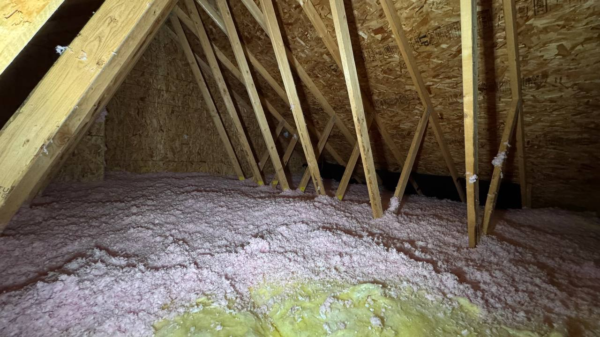

Licensed WA General Contractor
Washington contractor license #HMPROL*792CH. Bonded and insured.
Licensed Washington general contractor serving Seattle, Redmond, Bellevue, Sammamish, Mercer Island, Kirkland, and Greater King County. HM-PRO provides attic insulation, air sealing, blower door testing, thermal imaging, ventilation improvements, ductwork corrections, and documented home energy performance upgrades.
At HM-PRO we diagnose your attic with professional blower door testing and thermal imaging, fix the real issues - air leaks, ductwork, ventilation, bath fans - then insulate properly and re-test to prove the result.
Book Attic AssessmentHM-PRO is a licensed Washington State general contractor specializing in attic insulation, air sealing, and home energy performance for homeowners across Seattle, King County, and Snohomish County. We serve Redmond, Bellevue, Sammamish, Kirkland, Mercer Island, Woodinville, Issaquah, Bothell, Monroe, Snohomish, Mill Creek, and nearby communities.
Unlike commodity insulation contractors who simply blow new cellulose over existing problems, we measure first, fix the actual issues, and verify the result. Every project starts with blower door testing and thermal imaging to find where your home is losing energy.

Washington contractor license #HMPROL*792CH. Bonded and insured.
We measure air leakage before and after the work instead of guessing.
Infrared scanning helps locate hidden attic air leaks and insulation gaps.
Hundreds of five-star reviews across Google and Thumbtack.
Many Seattle homes lose heat through small openings around recessed lights, attic hatches, top plates, plumbing penetrations, bath fans, and disconnected ductwork. If those leaks are not sealed first, new insulation can still underperform because warm indoor air moves through it and escapes into the attic.
That is why HM-PRO treats the attic as part of the whole house. We look at air movement, moisture risk, ventilation, ductwork, and insulation depth before recommending the scope of work.

Our standard attic package is built around measurement, correction, insulation, and verification. The goal is not just more R-value. The goal is a tighter, better-performing attic with documented results.
A calibrated blower door test measures total air leakage before work begins.
Infrared imaging helps reveal air leak points that are not visible during a normal attic inspection.
We seal penetrations, correct ventilation and duct issues, install baffles, and add insulation.
After the work is complete, we re-test and provide documented before/after results.
A 2007-built home in Woodinville felt drafty and had high heating bills. The owner wanted measured answers, not generic insulation recommendations.


Most insulation estimates are visual. Our assessment uses measurement instruments: blower door testing, pressure gauges, thermal imaging, and written documentation. This gives the homeowner a clearer picture of what is actually happening before money is spent on insulation.
Adding insulation without air sealing first is like wearing a wool sweater with the buttons open. R-value loses real-world performance when air moves freely through it.
Final pricing depends on attic size, access, contamination, ventilation, ductwork, and selected upgrades. Minimum project size: $7,500.
Typical project: $8,000 - $15,000
Typical project: $12,000 - $22,000
Have questions about attic insulation, air sealing, rebates, or project cost? Start with a short phone consultation.
HM-PRO serves homeowners throughout King County and Snohomish County, including Seattle, Bellevue, Redmond, Sammamish, Kirkland, Mercer Island, Woodinville, Issaquah, Bothell, Monroe, Snohomish, Mill Creek, and nearby communities.
Book an attic assessment with HM-PRO. We will inspect, test, explain what is happening, and give you a clear scope with pricing before work begins.